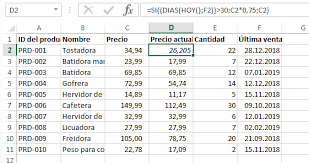

¿Que son?
El verdadero Potencial de excel está fundamentado en el uso de funciones preestablecidas y el uso de restricciones para que estas operen.
Una función condicional es aquella que nos permite realizar una acción siempre y cuando se cumpla con una condición determinada por el usuario
¿Como se usan?
La también llamada función IF de Excel verifica si se cumplen una o más condiciones y devuelve un valor que corresponde a la primera condición verdadera.
...
Las posibles condiciones son:
Igual (=)
Desigual (<>)
Menor a (<)
Mayor a (>)
Más pequeño o igual a (<=)
Más grande o igual a (>=)

Sintaxis
La función SI es una de las funciones más populares de Excel y le permite realizar comparaciones lógicas entre un valor y un resultado que espera. Por esto, una instrucción SI puede tener dos resultados. El primer resultado es si la comparación es Verdadera y el segundo si la comparación es Falsa. 
¿Cuales Son?
Las 10 funciones de Excel más importantes según Microsoft
SUMA. Combinar celdas o columnas en una suma no es tan fácil como escribir el nombre de cada celda y añadir el símbolo + en medio. ...
SI. Esta función sirve para responder preguntas. ...
BUSCAR. ...
BUSCARV. ...
COINCIDIR. ...
ELEGIR. ...
FECHA. ...
DIAS.
¿Para que sirven?
La función SI en Excel es parte del grupo de funciones Lógicas y nos permite evaluar una condición para determinar si es falsa o verdadera. La función SI es de gran ayuda para tomar decisiones en base al resultado obtenido en la prueba lógica.
¿Para que se usan?
Las funciones son herramientas de cálculo que ayudan a tomar decisiones, llevar a cabo acciones y ejecutar operaciones que devuelven valores automáticamente. Excel ofrece una amplia gama de funciones que permiten realizar diferentes tipos de cálculo. La mayoría de las funciones necesitan datos a procesar.